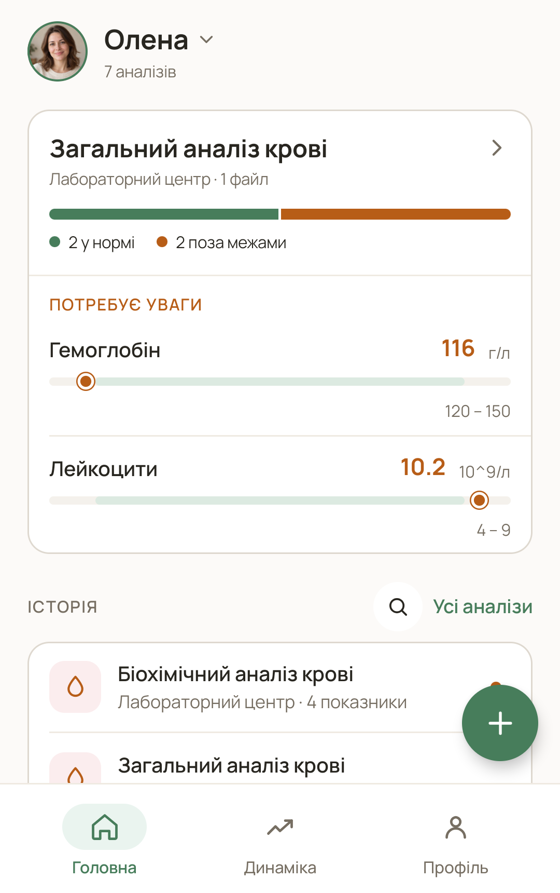
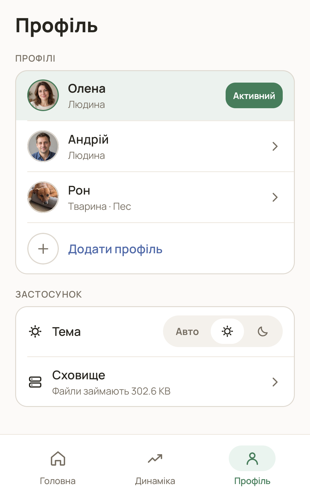
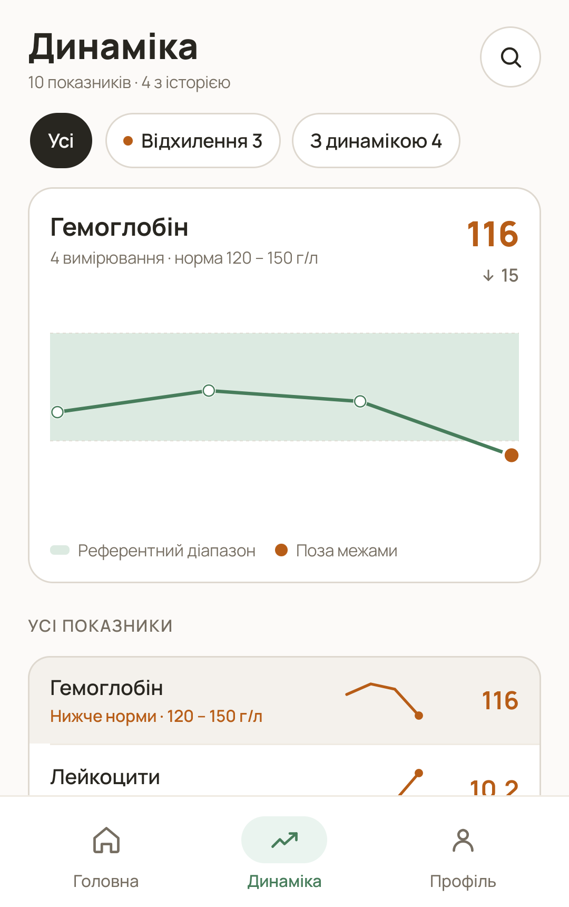

A personal space for lab reports
Every report.
One clear
history.
For you, your family and your pets. Keep results, PDFs and photos together, with the values you need easy to find.
Android · Ukrainian app interface

01 / A history for everyone
Your records.
And theirs, too.
Separate profiles keep family and animal reports from getting mixed up. Add a name and photo, plus species and breed for animals.
- For you and your family
Switch profiles to find the right person’s reports.
- For animals, too
Organize veterinary reports in their own profiles. Use the reference intervals supplied by the veterinary laboratory.

02 / From document to record
The file is here.
So are the details.
Add a PDF or photo, date, laboratory and notes. On-device text recognition helps reduce manual typing.
Recognition can make mistakes. The original laboratory report remains the source of truth.
- 01
Add a report
Choose a PDF, select an image or photograph the document.
- 02
Review the result
Check names, numbers, units and intervals against the original.
- 03
Keep it together
Find the record again through search or profile history.

03 / Values over time
More than the latest result.
Earlier values stay in your history. Charts bring recorded results from different dates into one view.
Color labels show a value’s position relative to its saved reference interval. They do not assess health or establish a diagnosis.
04 / Privacy, explained plainly
Your medical records
stay on your device.
The database and managed attachments are encrypted on Android. No account is needed, and report content is recognized locally.
- No Labra cloud for your reports
Labra does not upload medical records to its own server.
- You control local deletion
Delete individual records or all local data in Settings.
About network use: Google ML Kit may send technical OCR telemetry to Google. Images, medical values and recognized text are not uploaded for this telemetry.
Read the Privacy PolicySynchronization and backups are not currently available on Android. Keep original copies of important reports separately.
A few useful answers
Can I add reports for animals?
Yes. Labra has an animal profile type with species and breed fields. Add veterinary results, files and values to that profile. Human reference intervals should not be applied to animals.
Does Labra explain what my results mean?
Labra stores and organizes records, displays history and compares values with saved intervals. It does not provide consultations, diagnoses or treatment recommendations. Ask a healthcare professional or veterinarian.
Do I need internet access?
Core records and OCR work on the device. The recognition SDK may make network requests for technical purposes; see the policy for details. Visiting this website or sending a support message also requires connectivity.
Is the app available in English?
The app interface is currently in Ukrainian. This website and its policies are available in Ukrainian and English. An English website does not imply an English app interface.
Preparing for release on Google Play
Less searching.
More order.
Labra is preparing for release on Google Play. Contact the developer with app or privacy questions.
Contact the developer